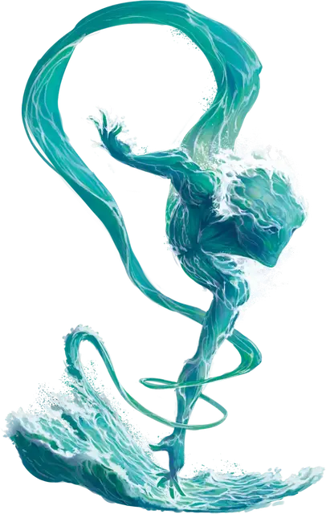

Дух стихии
Elemental Spirit
Средний Элементаль, без мировоззрения

Класс Доспеха 11 + уровень ячейки (природный доспех)
Хиты 50 + 10 за каждый уровень ячейки выше 4-го
Скорость 40 футов, плавая 40 футов (только вода), летая 40 футов ((парит) только воздух), копая 40 футов (только земля)
| мод | спас | ||
|---|---|---|---|
| СИЛ | 18 | +4 | +4 |
| ЛОВ | 15 | +2 | +2 |
| ТЕЛ | 17 | +3 | +3 |
| мод | спас | ||
|---|---|---|---|
| ИНТ | 4 | −3 | −3 |
| МДР | 10 | +0 | +0 |
| ХАР | 16 | +3 | +3 |
Сопротивление урону звук (только воздух), кислота (только вода), электричество (только воздух); колющий (только земля), рубящий (только земля)
Иммунитет к урону огонь (только огонь), яд
Иммунитет к состояниям окаменение, отравление, паралич, истощение
Чувства тёмное зрение 60 футов, пассивное Восприятие 10
Языки Первичный, понимает языки, на которых вы говорите
Опасность —
Особенности
Аморфный (только воздух, огонь и вода). Элементаль может перемещаться сквозь пространство шириной в 1 дюйм, без протискивания.
Действия
Мультиатака. Элементаль совершает количество атак, равное половине уровня ячейки, использованной для призыва (с округлением в меньшую сторону).
Размашистый удар. Рукопашная атака оружием: ваш модификатор броска атаки заклинанием к попаданию, досягаемость 5 фт., одна цель. Попадание: 1к10 + 4 + уровень ячейки дробящего урона (только воздух, земля или вода) или урона огнём (только огонь).
Описание
Блок статистики для призыва духа стихии с помощью заклинания призыв духа стихии [summon elemental].